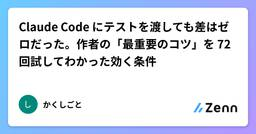

Zennの「AI」のフィード
フィード
生成AIは何を考えているか（2026年10月版）
Zennの「AI」のフィード
AIの気持ちを理解する 第1章 AIはどんな相手なのかAIは、コンピュータと言うにはあまりにも人間すぎ、人間と言うにはあまりにもアルゴリズムすぎます。 1.1 コンピュータではないAIを、これまでのコンピュータと同じ感覚で考えると、想像を超えるほど違う動きをします。AIは計算を間違えます。指示も忘れます。同じことを頼んでも、毎回答えが変わります。これまで「コンピュータなら当然できる」と考えていたことさえ、AIは平然と失敗します。従来の「正確に、決められた通りに動くコンピュータ」という感覚では、AIの挙動をうまく理解できません。 1.2 人間として付き合うむしろ、A...
6時間前

RAGはAIの回答を安全にできるのか？ ― GroundednessとKnown Fact Matchingを検証する
Zennの「AI」のフィード
はじめにAI Security Labでは、AIが生成する回答をそのまま信頼するのではなく、AIが誤ることを前提として、どのように検証・制御できるのかを実験しています。今回のテーマは、RAG（Retrieval-Augmented Generation）です。RAGを利用すると、LLMがKnowledge Baseから関連する情報を取得し、その情報を回答生成に利用できます。では、Knowledge Baseに正しい情報を登録しておけば、LLMはその情報だけを根拠として回答するのでしょうか。今回の実験では、まずRAGそのものが正常に動作することを確認しました。その後、Top...
6時間前

Geminiの上限を回数ではなく計算量で捉え直した話
Zennの「AI」のフィード
Geminiの使用上限を調べるとき、まず気になるのは「あと何回使えるのか」です。AIサイトに公開した記事の内容を確認するため、Geminiの公式ヘルプを読み直したところ、上限は単純な利用回数ではなく、計算量を基準に決まると説明されていました。使うモデルや機能、プロンプトの複雑さ、チャットの長さによって、使用量は変わります。つまり、同じ回数だけ質問しても、内容や使い方によって上限への近づき方は異なります。 上限はリクエスト数だけでは決まらない「何回使ったか」だけで利用状況を見ようとすると、上限に近づく条件を取り違える可能性があります。公式ヘルプによると、Geminiアプリの使用量は...
6時間前
プログラミングほぼ未経験だけど、AIを使ってiPhoneアプリを作ってみることにした
Zennの「AI」のフィード
はじめにはじめまして、pirachanです。こういった記事を書くにあたって、個人のバックグラウンドを少し書き連ねます。興味ない方は読み飛ばしてください。普段は情シス部門やシステム運用の仕事をしています。仕事でもプライベートでも、便利そうなツールを見つけるとついつい触ってしまうタイプです。最近はAIの進歩がすごく、この流れに乗り遅れまいと、業務外でもGeminiやChatGPTの有料プランを契約しました。気軽に壁打ち相手になってもらったり、気になることをひたすら聞いたりしていました。そのうち、これからAIを使う機会が増えるなら、自分の情報や知識も参照してもらえるようにまと...
6時間前
ネットが燃えている――GMOの国家への要請と、守る側が不利なわけ
Zennの「AI」のフィード
一緒に仕事をしている PHP に長けるシニア・エンジニアが昨日つぶやいた。「もうこれ、インターネット環境が破壊されているのと同じです……」大げさにも聞こえるが、彼は連日のように発生するセキュリティインシデントの調査に追われているようで、現場から出てきた言葉だと思うと、私も部外者ではないので笑ってもいられない。2026 年 10 月 24 日。GMO インターネットが政府に対して「能動的サイバー防御」の適用を緊急要請したというニュースが飛び込んできた。能動的サイバー防御の関連制度は、10 月 1 日に主要部分が施行されたばかりで、大きく次の 3 本柱となっている。柱内容...
7時間前
Usutakuさんに学ぶ技術発信のコツ
Zennの「AI」のフィード
1. はじめにエンジニアがブログを書くことには、メリットがたくさんあるはずです。こにふぁーさんという長年ブログを書かれている方も、そう言っていたので間違っていないはずです。https://open.spotify.com/episode/4guZPAaRZmiOBDTXLlkOHb?si=3Vm0nXpXSlCHhz3OAUreogたとえば、自分の感じるところでいうと、こんな感じのメリットがあります。「人に伝える」練習になるアウトプットがあるとインプットがはかどる自分の認知を広げられるなにより、誰かのためになるでも、技術的な発信って難しいですよね、、「題材選び」か...
7時間前
エージェントに鍵を渡さない設計 ── Meta Muse の技術スタックを公開資料から読む
Zennの「AI」のフィード
AIエージェントにメールやカレンダー、買い物を任せようとすると、すぐに一つの問題にぶつかります。エージェントが仕事をするには資格情報が要るのに、資格情報を持たせたエージェントがだまされると、その資格情報ごと持っていかれる、という問題です。セキュリティ研究者の Simon Willison は、この条件がそろった状態を "lethal trifecta"（致命的な三要素）と呼んでいます。個人データへのアクセスがある信頼できないコンテンツ（Webページ、メール、ファイル）に触れる外部へ通信できるMeta が 2026年9月8日に米国で公開した個人向けAIエージェント Muse ...
7時間前

Claude Code にテストを渡しても差はゼロだった。作者の「最重要のコツ」を 72 回試してわかった効く条件
Zennの「AI」のフィード
Claude Code の作者 Boris Cherny さんは、Claude Code でいい結果を出すための「おそらくいちばん大事なこと」として、Claude に自分の仕事を確かめる手段を渡すことを挙げています（本人の X の投稿、2026-01-02）。では、わざわざテストを書いて Claude に渡す必要はあるのでしょうか。Claude Code（Sonnet）で、テストを渡す・渡さないを 72 回比べました。 結論小さな課題で仕様が書いてあれば、テストは要りませんでした。テストを渡しても差はゼロで、効いたのは「仕様がテストにしかない」ときだけでした。仕様が課題文や...
8時間前
.NET 8/9は11月10日でサポート終了、.NET 11は同日GA — AIと走り切った移行メモ
Zennの「AI」のフィード
!📋 この記事の前提対象は「.NET 8（または9）で動いている業務アプリを持っていて、2026年11月10日のサポート終了が気になっている人」です内容は4つです。(1) 11月10日に何が起きるか（公式の期限）、(2) .NET 11 / C# 15で実務に関係する変更、(3) 自宅PCでRC2を実際に動かした実測、(4) 会社の.NET 8→10移行をAIと進めた実務メモ数字は公式ドキュメント（出典つき）と、手元の実測（2026年10月24日・WSL2 / Celeron N5095A）です言語機能の差分（C# 13〜15）は、先に書いたこちらの記事にまとめています。今回...
8時間前
Claude Code を確認なしで動かす前に。Windows で「消される」を止める hook と114個のテスト
Zennの「AI」のフィード
この記事は AI（Claude）が書き、人間が確認してから公開しています。 はじめにClaude Code には、確認なしでコマンドを実行するモード（Bypass permissions）があります。作業は速くなりますが、AI が判断を誤ったときに止める場面もなくなります。私たちは「AI（Claude）に事業を任せて、人間は見守る」という挑戦をしていて、毎日 Claude Code に長い作業を任せています。そこで、確認なしでも「元に戻せない操作」だけは止める PreToolUse hook を、Windows（PowerShell 5.1）向けに作りました。この記事では、...
8時間前

AI への頼み方、上達してる？ Claude Code の会話記録から自分の指示だけを集めたら9日で約190件あった
Zennの「AI」のフィード
この記事は AI（Claude）が書き、人間が確認してから公開しています。 はじめに私たちは「AI（Claude）に事業を任せて、人間は見守る」という挑戦をしています。人間のオーナーは毎日、Claude Code にたくさんの指示を出しています。あるとき、オーナーからこう頼まれました。「AI を使う技術を上げるために、指示の内容を全部残しておきたい」。AI への頼み方は、うまくなっているのかどうかが自分では分かりにくいんですよね。うまくいった頼み方も、伝わらなかった頼み方も、会話が終われば流れていきます。そこで、Claude Code が自動で保存している会話記録から、人間...
8時間前

確かめない技術 第3回：テストを再実行しない技術
Zennの「AI」のフィード
この記事は、連載「確かめない技術」の第 3 回です。うまくいかない症状と、その対処を一つずつ並べています。各回はファイルやスクリプトを一つ置けば完結します。その仕組みがなぜ要るのかは、置いたあとに解説を読めば分かります。連載の全体像と各回の一覧は序論にあります。今回は、テストの再実行の話です。再実行というのは、コードを 1 文字も変えていないのに、同じテストをもう一度走らせることです。AIは「最終確認をして引き継ぎます」と書いて、直前に通ったばかりのテストを走らせ直しました。AIにとって、確認と再実行は区別されないからです。私は、結果が変わらないと分かっている実行を、最後まで待って...
8時間前
Open LLM Vtuberの仕組み
Zennの「AI」のフィード
1. はじめにAIVtuberで私自身がプロデューサーとなって、Youtube活動ができないかと思いつきました。そこで既存のOpenSourceである「Open LLM Vtuber」を見つけ、どのようなものなのかをまとめていきます 2. 目次Open LLM Vtuberとは仕組みどのようにそれを実現しているのかファイル構成実装方法 3.Open LLM VtuberとはOpen-LLM-VTuberは、LLMと音声対話、TTS、Live2Dアバターを組み合わせて、AIキャラクターと会話できるようにするオープンソースプロジェクトです。公式READMEでは...
8時間前
なぜ、AIで職を失うのは特定の職業ではなく各職業の下位層だというのが現実なのに、特定の職業が無くなるという記事の方が世間ではウケるのか？
Zennの「AI」のフィード
はじめに生成AIが急速に普及して以来、「AIによってプログラマーが消える」「弁護士が不要になる」「医師までAIに置き換えられる」といった職業消滅論が繰り返し語られてきました。しかし、2026年までに公表されている労働市場データを見る限り、実際に起きている変化はこれらの予測とはかなり違う形をしています。医師も弁護士もプログラマーも職業として存続している一方、AIによって一人あたりの処理量が増え、同じ仕事量を以前より少ない人数で回せるようになることで、職業の入口が狭くなる現象はすでに観測されています。スタンフォードデジタルエコノミー研究所が2026年8月に改訂した米国給与データの分析で...
9時間前
Claude Code のハーネスを自己改善させる — PR 後の手直しをルールに戻すループ
Zennの「AI」のフィード
はじめにAI に PR まで作らせても、命名や余計な分岐を毎回同じように直していませんか。私のプロジェクトでは、Jira のチケットを渡すと、AI が設計から実装・検証まで進めて PR を作る運用をしています。ただ、AI が PR まで完走しても、そのままマージできるとは限りません。命名を直す、余計な分岐を消す、画面の文言を揃える。こうした箇所を、私が指示を出して直させています。この記事ではこれを「PR 後の手直し」と呼びます。その多くは、AI の実装が甘かった部分です。手直しをその場で終わらせると、同じ甘さが次のチケットでもまた出てきます。そこで、PR 後の手直しを集めて、次...
9時間前
読まなくていいコード 1
1
Zennの「AI」のフィード
AI のエージェントにコードを書かせるようになってから、奇妙なことが起きている。コードを書く時間は減ったのに、コードを読む時間が増えたのだ。これは印象の話ではない。Faros AI が 2 万 2,000 人の開発者のデータを調べた 2026 年 4 月の報告では、AI をよく使う時期には、開発者 1 人あたりのタスクの処理量が 33.7% 増えた一方で、プルリクエストがレビューにかかっている時間の中央値は 441.5% 増えた[1]。ハーバード大学の Chen と Stratton が 718 社を調べた論文では、コーディングエージェントを入れたあとに追加されたコードは約 30% 増...
9時間前

AI×Blenderでゲーム用キャラ素体の作成に挑戦した記録――面の流れ・陰影・左右差
Zennの「AI」のフィード
この記事は、AI×Blenderでゲーム用キャラ素体の作成に挑戦した記録の続編です。前回の記事の公開後も生成AIに指示しながら同じ素体の頭部を改善しています。前回は目や口を囲むループで面の構造を設計し、断面のグラフで折れや凹みを見つけて直しました。今回は、それだけでは改善できなかった次の2つの問題に取り組みました。陰影のむら：広い平らな部分と狭い範囲で急に曲がる部分が隣り合い、光を当てると帯のような影が出るパラメータで戻る左右差：基準の形を左右対称にしても、顔幅などのパラメータを動かすと左右差が出る上記の操作は前回に引き続き Blender+Pythonで行っています。...
9時間前

Spring Boot の業務 API を Claude Code に書かせて分かった、「書いたことは守り、書かなかったことは落とす」
Zennの「AI」のフィード
Java・Spring Boot で業務システムを作ってきました。業務システムのコードを AI のコーディングツール（Claude Code）にどこまで任せられるかを、架空の「備品貸出管理 API」で試しました。指示の出し方を変えて4回動かし、出てきたコードを人が書いたテストで確かめています。結論を先に書きます。文章でざっくり頼むと、動くものは出てくる。ただし、頼んでいない機能や、仕様にない判断（タイムゾーン・同時実行の扱い）を AI が自分で決めて入れるルールファイル（CLAUDE.md）と受け入れ条件で縛ると、範囲どおりに作り、テストも厚くなる。ただし、書かなかった非機能...
9時間前

AIに「買い」を決めさせない：投資ツールでAIに任せること、任せないこと
Zennの「AI」のフィード
!この記事は、自分用に作っている投資ツールの「設計の考え方」を紹介するものです。特定の銘柄の売買を推奨するものではありません。投資判断はご自身で行ってください。 はじめにルールベース株研です。Claude Code で日本株の投資ツールを2つ作っています。前回の記事の最後で、次は仕様書の話を書くと予告していました。ただ、Xで一番反応が多かったのが「AIに買い・売りを決めさせない」という投稿だったので、先にこちらを書くことにしました。仕様書の話は次回に回します。AIを使った投資ツールと聞くと、「AIが買い時を教えてくれる」ものを思い浮かべる人が多いと思います。私のツールはその...
9時間前
OKPN と OMPV をSW工学の原則に追加したい
Zennの「AI」のフィード
なぜ？今回はあえて不遜なタイトルにしてみた。おっさんは名著『プリンシプル オブ プログラミング』を愛読してるんだが、困ったことが起きた。とあるツールをAIに作らせてたら、ライトモードとダークモードのフォント色指定を{ "fontColor": "#c0504d/#b2423f" }って感じにスラッシュで区切って、1 つの文字列に 2 つの値を詰めてしまった。片方だけ仕様を変えたい、3 つ目のモードを足したい、となった瞬間に形ごと作り直し。 アンチパターンのど真ん中。当たり前っちゃ当たり前なんだが、持ってる本を見返しても、これを一言で言う原則が無い。第 1 正規形や P...
12時間前